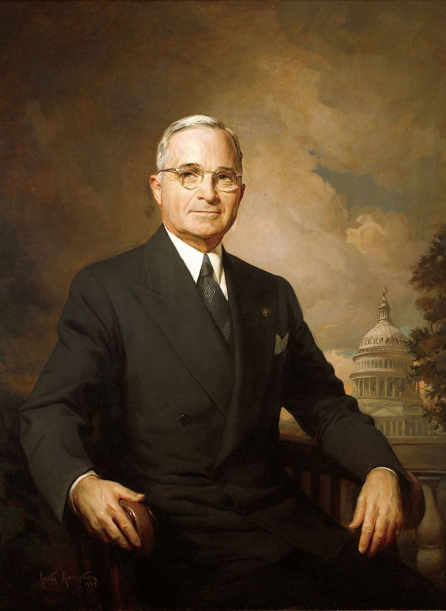

Sumber- Harry S. Truman (1884-1972) Harry S. Truman adalah Presiden ke-33 Amerika Serikat (1945–1953) yang terkenal karena menjatuhkan bom atom di Hiroshima dan Nagasaki, mengakhiri Perang Dunia II, serta memimpin AS dalam awal Perang Dingin.
Lahir: 8 Mei 1884 di Lamar, Missouri, AS
Tidak memiliki gelar sarjana, tetapi pernah belajar di sekolah bisnis
Karier awal:Petani, Prajurit di Perang Dunia I, Politisi dan Senator dari Missouri
Menjadi Wakil Presiden AS (1945) di bawah Franklin D. Roosevelt (FDR) April 1945: Roosevelt meninggal, Truman langsung diangkat sebagai Presiden
1. Menjatuhkan Bom Atom (Agustus 1945)
Hiroshima (6 Agustus 1945), Nagasaki (9 Agustus 1945), Jepang menyerah pada 15 Agustus 1945, mengakhiri Perang Dunia II
2. Membentuk Perserikatan Bangsa-Bangsa (PBB) AS menjadi salah satu negara pendiri PBB untuk mencegah perang global di masa depan
1. Doktrin Truman (1947)
Menyatakan bahwa AS akan membantu negara-negara yang melawan komunisme (terutama Yunani dan Turki) Awal dari kebijakan "containment" (menahan penyebaran komunisme)
2. Marshall Plan (1948)
Memberikan bantuan ekonomi besar-besaran ke Eropa Barat untuk membangun kembali ekonomi mereka setelah perang
3. Perang Korea (1950–1953)
Mengirim pasukan AS ke Korea Selatan untuk melawan invasi Korea Utara (komunis) Perang masih berlanjut saat Truman meninggalkan jabatannya
Desegregasi Militer (1948): Menghapus diskriminasi rasial di Angkatan Bersenjata AS Mendukung hak-hak sipil, meskipun menghadapi penolakan dari banyak politisi di selatan
Meninggal dunia: 26 Desember 1972 di Kansas City, Missouri
Dikenang sebagai pemimpin tegas yang mengambil keputusan sulit. Beberapa kebijakannya, seperti Doktrin Truman dan Marshall Plan, membentuk dunia modern dan awal Perang Dingin.